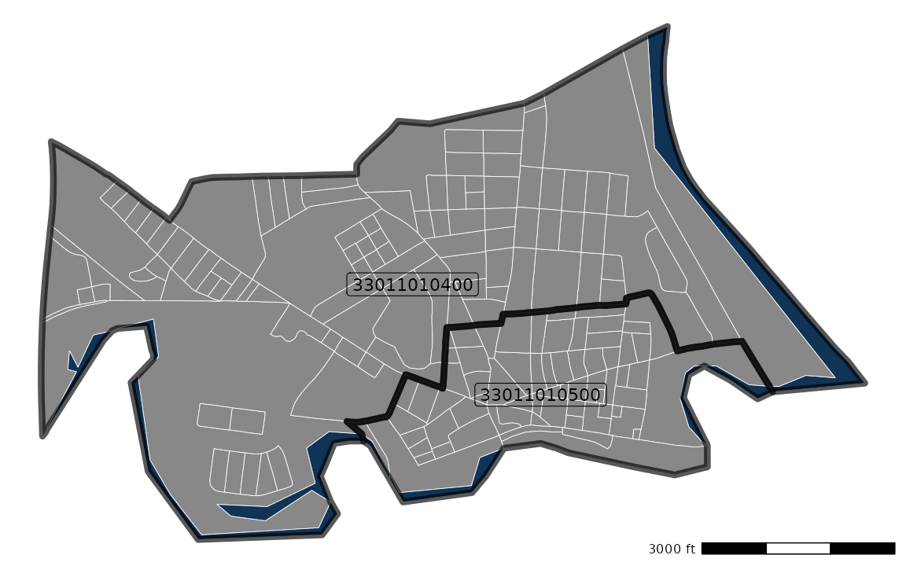

Children in Poverty
children_in_poverty.RmdThe two tracts are from the northern part of Nashua, NH. Here’s a map:

Families by standard of living
The American Community Survey has a table
that categorizes families according to the ratio between their income
and the Federal
poverty level in their community. Nowadays, the Federal poverty
level does
not actually represent an income threshold where families really
start struggling. It is actually more of a measure of where you are in
real danger of starving
to death. For that reason, Higher Expectations for Racine County
uses three times the Federal poverty level as its
threshold for a family-sustaining
income. The hercacstables package provides a table,
STANDARD_OF_LIVING_METADATA, that describes this
classification.
| Variable | Least Poverty Ratio | Greatest Poverty Ratio | Standard of Living |
|---|---|---|---|
| B17026_001E | -999.00 | 999.00 | Everyone |
| B17026_002E | -999.00 | 0.50 | Unsustainable |
| B17026_003E | 0.50 | 0.74 | Unsustainable |
| B17026_004E | 0.75 | 0.99 | Unsustainable |
| B17026_005E | 1.00 | 1.24 | Unsustainable |
| B17026_006E | 1.25 | 1.49 | Unsustainable |
| B17026_007E | 1.50 | 1.74 | Unsustainable |
| B17026_008E | 1.75 | 1.84 | Unsustainable |
| B17026_009E | 1.85 | 1.99 | Unsustainable |
| B17026_010E | 2.00 | 2.99 | Unsustainable |
| B17026_011E | 3.00 | 3.99 | Family-sustaining |
| B17026_012E | 4.00 | 4.99 | Family-sustaining |
| B17026_013E | 5.00 | 999.00 | Family-sustaining |
We use that table and the Census API look up how many families in each tract are in each Census income bracket.
RAW_STANDARD_OF_LIVING <- hercacstables::STANDARD_OF_LIVING_METADATA |>
dplyr::pull(
"Variable"
) |>
hercacstables::fetch_data(
year = 2021L,
for_geo = "tract",
for_items = c("010400", "010500"),
survey_type = "acs",
table_or_survey_code = "acs5",
state = 33L,
county = "011",
use_key = TRUE
)Then, we aggregate to get counts of families experiencing “Unsustainable” and “Sustainable” standards of living.
| tract | Family-sustaining | Unsustainable | Everyone | Percent Family-sustaining |
|---|---|---|---|---|
| 010400 | 957 | 224 | 1181 | 81% |
| 010500 | 337 | 633 | 970 | 35% |
You can see that the economic situations in the two tracts are very different.
Families by children present
We need to go from counts of families to counts of children, so we
will next look up how many families in each tract have children. The
census has a table
for this that reports how many families have no kids, kids under 6, kids
6-17, or both. The hercacstables package has a table,
FAMILIES_WITH_CHILDREN_METADATA, that describes the
relationship between the ACS variables and the presence/absence of
children.
| Variable | Adults | Children under 6 | Children 6-17 |
|---|---|---|---|
| B11003_004E | Married Couple | TRUE | FALSE |
| B11003_005E | Married Couple | TRUE | TRUE |
| B11003_006E | Married Couple | FALSE | TRUE |
| B11003_007E | Married Couple | FALSE | FALSE |
| B11003_011E | Male householder, no spouse present | TRUE | FALSE |
| B11003_012E | Male householder, no spouse present | TRUE | TRUE |
| B11003_013E | Male householder, no spouse present | FALSE | TRUE |
| B11003_014E | Male householder, no spouse present | FALSE | FALSE |
| B11003_017E | Female householder, no spouse present | TRUE | FALSE |
| B11003_018E | Female householder, no spouse present | TRUE | TRUE |
| B11003_019E | Female householder, no spouse present | FALSE | TRUE |
| B11003_020E | Female householder, no spouse present | FALSE | FALSE |
We can use this table to query the API to get the number of families
with children in each of the census tracts that we are interested in.
Notice that the only difference between this query and the previous one
is which variables we are asking for. The whole point of the
hercacstables package is to help you not repeat yourself
when you are asking for many different pieces of census information
about the same place.
RAW_FAMILIES_WITH_CHILDREN <- hercacstables::FAMILIES_WITH_CHILDREN_METADATA |>
dplyr::pull(
"Variable"
) |>
hercacstables::fetch_data(
year = 2021L,
for_geo = "tract",
for_items = c("010400", "010500"),
survey_type = "acs",
table_or_survey_code = "acs5",
state = 33L,
county = "011",
use_key = TRUE
)We will aggregate the families into “Children Present” and “No Children.”
| tract | Children Present | No Children | Total | Percent with Children |
|---|---|---|---|---|
| 010400 | 460 | 721 | 1181 | 39% |
| 010500 | 470 | 500 | 970 | 48% |
Once again, we see a pretty substantial difference between the two tracts. Reassuringly, the total number of families is the same in both sets of data.
Children per family by poverty level
The last set of raw data that we need is the number of children
living in poverty. “But, wait!” you say, “Isn’t that everything we
needed in the first place?” That would be true, except that the best we
can get from the ACS is a table
that has detailed information about parents’ birth origins but only
distinguishes three income tiers: less than the Federal poverty level,
1x-2x, and more than 2x the Federal poverty level. The
hercacstables package’s table
CHILDREN_IN_POVERTY_METADATA describes how the variables in
that table map to parental place of birth and kid poverty.
| Variable | Least Poverty Ratio | Greatest Poverty Ratio | Standard of Living | Native-Born Parents | Foreign-Born Parents |
|---|---|---|---|---|---|
| B05010_004E | -999 | 1.00 | Unsustainable | 2 | 0 |
| B05010_005E | -999 | 1.00 | Unsustainable | 0 | 2 |
| B05010_006E | -999 | 1.00 | Unsustainable | 1 | 1 |
| B05010_008E | -999 | 1.00 | Unsustainable | 1 | 0 |
| B05010_009E | -999 | 1.00 | Unsustainable | 0 | 1 |
| B05010_012E | 1 | 1.99 | Unsustainable | 2 | 0 |
| B05010_013E | 1 | 1.99 | Unsustainable | 0 | 2 |
| B05010_014E | 1 | 1.99 | Unsustainable | 1 | 1 |
| B05010_016E | 1 | 1.99 | Unsustainable | 1 | 0 |
| B05010_017E | 1 | 1.99 | Unsustainable | 0 | 1 |
| B05010_020E | 2 | 999.00 | Mixed | 2 | 0 |
| B05010_021E | 2 | 999.00 | Mixed | 0 | 2 |
| B05010_022E | 2 | 999.00 | Mixed | 1 | 1 |
| B05010_024E | 2 | 999.00 | Mixed | 1 | 0 |
| B05010_025E | 2 | 999.00 | Mixed | 0 | 1 |
Here’s the query to get those data:
RAW_CHILDREN_IN_POVERTY <- hercacstables::CHILDREN_IN_POVERTY_METADATA |>
dplyr::pull(
"Variable"
) |>
hercacstables::fetch_data(
year = 2021L,
for_geo = "tract",
for_items = c("010400", "010500"),
survey_type = "acs",
table_or_survey_code = "acs5",
state = 33L,
county = "011",
use_key = TRUE
)We want 3x the poverty level, so we will lump the “less than 1x” and “1x-2x” tiers into “Unsustainable,” leaving us with the “2x+” tier that mixes both the “2x-3x” tier that we are calling “Unsustainable” and the “3x+” tier that we are calling “Sustainable.”
| tract | Mixed | Unsustainable | Children |
|---|---|---|---|
| 010400 | 1037 | 126 | 1163 |
| 010500 | 401 | 322 | 723 |
Join the three datasets
Each of the three queries resulted in a data frame where rows correspond to census tracts, so we can join the three results by the “tract” column. We can also remove some of the duplicate columns to end up with just the tract, the number of kids, the number of families, and the percentages of families with children and with sustainable standards of living.
CHILDREN_BY_TRACT <- CHILDREN_IN_POVERTY |>
dplyr::inner_join(
FAMILIES_WITH_CHILDREN,
by = "tract"
) |>
dplyr::inner_join(
STANDARD_OF_LIVING,
by = "tract"
) |>
dplyr::select(
"tract",
"Children",
"Mixed",
"Observed Unsustainable" = "Unsustainable.x",
"Families" = "Total",
tidyselect::starts_with("Percent")
)This is what that table looks like:
| tract | Children | Mixed | Observed Unsustainable | Families | Percent with Children | Percent Family-sustaining |
|---|---|---|---|---|---|---|
| 010400 | 1163 | 1037 | 126 | 1181 | 39% | 81% |
| 010500 | 723 | 401 | 322 | 970 | 48% | 35% |
You can see that, in this case, we did not actually need to pull the number of families with children. If we were doing an even nerdier dive, though, we could use the fraction of families with children to look at poverty across demographics like race or ethnicity.
In this case, though, we just need to multiply the total number of children by the percentage of families that have an sustainable standard of living.
SUSTAINABLE_KIDS <- CHILDREN_BY_TRACT |>
dplyr::mutate(
`Expected Unsustainable` = .data$Children * (1 - .data$`Percent Family-sustaining`),
`Extra Unsustainable` = .data$`Expected Unsustainable` - .data$`Observed Unsustainable`,
`Sustainable Kids` = .data$Mixed - .data$`Extra Unsustainable`,
`Percent kids in Sustainable` = .data$`Sustainable Kids` / .data$Children,
`Expected Sustainable` = .data$Children * .data$`Percent Family-sustaining`
)
SUSTAINABLE_KIDS |>
dplyr::select(
"tract",
"Children",
"Percent Family-sustaining",
"Expected Sustainable",
"Expected Unsustainable",
"Mixed",
"Observed Unsustainable",
"Extra Unsustainable",
"Sustainable Kids",
"Percent kids in Sustainable"
) |>
knitr::kable()| tract | Children | Percent Family-sustaining | Expected Sustainable | Expected Unsustainable | Mixed | Observed Unsustainable | Extra Unsustainable | Sustainable Kids | Percent kids in Sustainable |
|---|---|---|---|---|---|---|---|---|---|
| 010400 | 1163 | 0.8103302 | 942.4141 | 220.5859 | 1037 | 126 | 94.58594 | 942.4141 | 0.8103302 |
| 010500 | 723 | 0.3474227 | 251.1866 | 471.8134 | 401 | 322 | 149.81340 | 251.1866 | 0.3474227 |